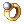

Marriage
Overview
In NovaRO, any 2 adult characters over level 45 can get married. This means any gender, any class, any species, as long as they are not a Baby Class or under level 45 can get married. You can only be married to 1 person at a time, but you can divorce your partner to marry another.
Regular NPC hosted Wedding Steps
| Requirements | |
|---|---|
| Base Level: | 45 |
| Starting Point: | Any Church |
| Items: | Brides only: 1,200,000z Wedding Dress  Diamond Ring Grooms only: |
| Rewards | |
| Experience: | The experience of starting a family |
| Items: | Brides only: Wedding Ring Grooms only: |
| Others: | Ability to use wedding skills |
- Acquire items necessary to get married. For Brides, you will need Wedding Dress, Diamond Ring, and 1,200,000 zeny.
For Grooms, you will need Tuxedo, Diamond Ring, and 1,300,000 zeny. The Dresses and Tuxedos can be purchased atprt_in(211, 169)orlhz_in02(47, 148), while the Diamond Ring can be purchased atmoc_ruins(52, 85),xmas_in(169, 34),lhz_in01(105, 21), or dropped from Succubus and Incubus. - Make a party with your beloved. You must be in the same party, with no one else in the party. People are telling you to get a room, and this party is that room.
- Find a location to get married! The Warper NPC will warp you to all churches except the one in Lasagna, which can be found in
lasagna 332, 251. Use theWarper -> Special Areas -> Churchesto see the list of Marriage locations! - Talk to the Marriage NPC - Happy Marry, and then make your way down the aisle and talk to the Priest!
- At this point, you and your spouse will have Wedding Rings with your own names on them. Trade your partner to acquire the ring with their name. This ring will allow you to use the Wedding Skills.
- Congrats! You are now Married!
Game Master hosted Wedding
In NovaRo, you can request for GMs to hold your wedding ceremony. You can find the related forum topic here - Note you need a forum account to see it.
- First, you will have to submit your request by filling the form available here. The request must be sent at least 1 week before the planned date.
- The cost of a ceremony curated by a Game Master will be 5 Million Zeny (2.5 Million Zeny for each player) and two diamond rings (1 from each player). The fees will be collected by the GM hosting.
- You can bring and wear Tuxedo and Wedding Dress to savour the moment but this is not part of the requirements.
- Note that you can ask for your GM hosted wedding ceremony to be held at anyplace you would like and not limit yourself to existing churches.
- At the end of the ceremony, spouses will get Wedding Ring(Bride) Wedding Ring(Groom) and you will be able to use wedding skills.
Adoption

Adoption Services NPC
Once married, you will be able to adopt a child.
The adoptee will become a Baby class Character. They have some restrictions such as:
- 75% only of max hp/sp
- can't rebirth
- stats can't exceed 80 and 120 when 3rd class
but the huge advantage is, of course, their absolute cuteness.
You will need to be in a party with your spouse and future child (one of the parents need to be the party leader).
To process with the adoption, go to Main Office at the entrance and talk to the NPC Adoption Service.
To note with baby classes
Baby characters no longer ignore the EXP share limit when teamed with their parents.
A NPC in Main Office's Gym, Venerable Grandpa (main_office,181,118), allows a baby character to finally be a regular ol' adult. He's only visible by baby classes. Note that you will be transformed into the same class and level, except for 3rd Job classes (will return as a 1/1 High Novice, where they'll be able to level as a Trans class and then change into a regular 3rd job).
Skills
| Skill | Type | Properties | Description |
|---|---|---|---|
| I miss you | Active |
|
Summons the partner.
|
| I'll save you | Active |
|
Use your own HP to cure the HP of your partner.
|
 I'll sacrifice myself for you I'll sacrifice myself for you
|
Active |
|
Use your own HP to cure the SP of your partner.
|